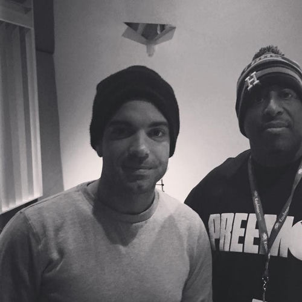

Eamon Doyle, known mononymously as Eamon, is an American singer and songwriter. He is mainly known for his 2003 hit single "I Don't Want You Back".
Complete Discography & Tracklists (22)
2004 I Don't Want You Back 🎵 0 Tracks
No tracks registered.
2004 I Love Them H*'s 🎵 4 Tracks
2004 F**K It (I Don't Want You Back) 🎵 4 Tracks
2004 Solo 🎵 3 Tracks
2007 Love & Pain 🎵 0 Tracks
No tracks registered.
2007 (How Could You) Bring Him Home 🎵 5 Tracks
2007 (How Could You) Bring Him Home? 🎵 3 Tracks
2007 (How Could You) Bring Him Home (Fraser T. Smith Dirty Radio Edit) 🎵 1 Tracks
2007 (How Could You) Bring Him Home (Fraser T. Smith Clean Radio Edit) 🎵 1 Tracks
2024 Santa in New York 🎵 0 Tracks
No tracks registered.
2024 Evergreen 🎵 0 Tracks
No tracks registered.